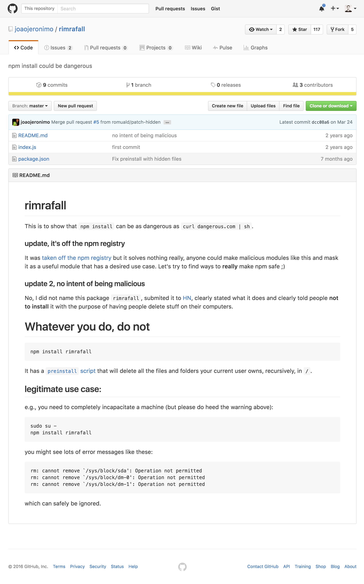

class: front-page # Vanilla JS ## Frontendprogrammet <span class="today-date"></span> --- class: agenda # Plan for dagen * Show and tell med Øyvind x2 * JavaScript * DOM-api * Prototypes * Promises * Lunsj --- class: middle center .card[ .picture[  ] .name[Øyvind Skaar] .title[Systemutvikler] .department[Technology] .phone[909 43 920] .email[oyvind.skaar@bekk.no] ] .card[ .picture[  ] .name[Øyvind Midtbø] .title[Systemutvikler] .department[Technology] .phone[995 15 434] .email[oyvind.midtbo@bekk.no] ] --- class: middle center # npm script --- # package.json ```json { "name": "bygge-workshop", "version": "1.0.0", "author": "Kent Andersen <kentareandersen@gmail.com>", "license": "MIT", "dependencies": { ... }, "devDependencies": { ... } } ``` --- # package.json ```json { "name": "bygge-workshop", "version": "1.0.0", "author": "Kent Andersen <kentareandersen@gmail.com>", "license": "MIT", "scripts": { }, "dependencies": { ... }, "devDependencies": { ... } } ``` --- # package.json ```json { "name": "bygge-workshop", "version": "1.0.0", "author": "Kent Andersen <kentareandersen@gmail.com>", "license": "MIT", "scripts": { "build": "echo building..." }, "dependencies": { ... }, "devDependencies": { ... } } ``` -- ```bash $ npm run build ``` -- ```bash > bygge-workshop@1.0.0 build /Users/kentandersen/Develop/frontend-programmet/bygge-workshop > echo building... building... ``` --- #npm lifecycle * `prepublish`<br> Run BEFORE the package is published. * `publish, postpublish`<br> Run AFTER the package is published. * `preinstall`<br> Run BEFORE the package is installed * `install, postinstall`<br> Run AFTER the package is installed. * `prestart, start, poststart`<br> Run by the npm start command. * `prestop, stop, poststop`<br> Run by the npm stop command. * `prerestart, restart, postrestart`<br> Run by the npm restart command. .source[https://docs.npmjs.com/misc/scripts] --- <div class="browser"> <div class="title">Rimraffall</div> <div class="url">https://github.com/joaojeronimo/rimrafall#rimrafall</div> <div class="content">  </div> </div> --- <div class="browser"> <div class="title">Rimrafall</div> <div class="url">https://github.com/joaojeronimo/rimrafall#rimrafall</div> <div class="content"> <img src="resources/github-rimrafall-package.json.png" style="width:100%"/> </div> </div> --- class: cols two #Oppgave 1 Lag 4 npm script i package.json som skriver ut en vilkårlig tekst * `serve` * `build-html` * `build-css` * `build-js` --- class: middle center # produkter --- <div class="browser"> <div class="title">node-static</div> <div class="url">https://www.npmjs.com/package/node-static</div> <div class="content"> </div> </div> --- <div class="browser"> <div class="title">LESS CSS</div> <div class="url">http://less2css.org/</div> <iframe src="http://less2css.org/" /> </div> --- <div class="browser"> <div class="title">Browserify</div> <div class="url">http://browserify.org/</div> <iframe src="http://browserify.org/" style="background-color: #fff"/> </div> --- <div class="browser"> <div class="title">Babel</div> <div class="url">https://babeljs.io/repl/</div> <iframe src="https://babeljs.io/repl/" /> </div> --- #.babelrc ```json { "presets": ["es2015"] } ``` --- <div class="browser"> <div class="title">babelify</div> <div class="url">https://www.npmjs.com/package/node-static</div> <div class="content"> </div> </div> --- class: middle center # node_modules/.bin --- # package.json ```json { "name": "bygge-workshop", "version": "1.0.0", "author": "Kent Andersen <kentareandersen@gmail.com>", "license": "MIT", "scripts": { "build": "echo building..." }, "dependencies": { ... }, "devDependencies": { ... } } ``` .source[https://docs.npmjs.com/files/package.json#bin] --- # package.json ```json { "name": "bygge-workshop", "version": "1.0.0", "author": "Kent Andersen <kentareandersen@gmail.com>", "license": "MIT", "scripts": { "build": "echo building..." }, "bin": "./path/to/bin", "dependencies": { ... }, "devDependencies": { ... } } ``` .source[https://docs.npmjs.com/files/package.json#bin] --- #Node executable ```bin $ ls -lah node_modules/.bin/ lrwxr-xr-x 1 kent andersen Oct 8 15:04 static -> ../node-static/bin/cli.js lrwxr-xr-x 1 kent andersen Oct 8 14:52 lessc -> ../less/bin/lessc lrwxr-xr-x 1 kent andersen Oct 8 14:52 cssnano -> ../cssnano-cli/cmd.js lrwxr-xr-x 1 kent andersen Oct 8 14:52 browserify -> ../browserify/bin/cmd.js lrwxr-xr-x 1 kent andersen Oct 8 14:57 uglifyjs -> ../uglify-js/bin/uglifyjs ``` --- #Static cli -- ```bin $ ./node_modules/.bin/static --help ``` -- ```text USAGE: static [-p <port>] [<directory>] simple, rfc 2616 compliant file streaming module for node Options: --port, -p TCP port at which the files will be served [default: 8080] --host-address, -a the local network interface at which to listen [default: "127.0.0.1"] --cache, -c "Cache-Control" header setting, defaults to 3600 --version, -v node-static version --headers, -H additional headers (in JSON format) --header-file, -f JSON file of additional headers --gzip, -z enable compression ``` --- #Static cli ```bin $ ./node_modules/.bin/static dist ``` --- #Lessc cli -- ```bin $ ./node_modules/.bin/lessc --help ``` -- ```text usage: lessc [option option=parameter ...] <source> [destination] If source is set to `-' (dash or hyphen-minus), input is read from stdin. options: -h, --help Prints help (this message) and exit. --include-path=PATHS Sets include paths. Separated by `:'. `;' also supported on windows. -M, --depends Outputs a makefile import dependency list to stdout. --no-color Disables colorized output. --no-ie-compat Disables IE compatibility checks. --no-js Disables JavaScript in less files -l, --lint Syntax check only (lint). -s, --silent Suppresses output of error messages. --strict-imports Forces evaluation of imports. --insecure Allows imports from insecure https hosts. -v, --version Prints version number and exit. --verbose Be verbose. ``` --- #Lessc cli ```bin $ ./node_modules/.bin/lessc src/main.less dist/main.css ``` --- #Browserify cli -- ```bin $ ./node_modules/.bin/browserify --help ``` -- ```text Usage: browserify [entry files] {OPTIONS} Standard Options: --outfile, -o Write the browserify bundle to this file. If unspecified, browserify prints to stdout. --entry, -e An entry point of your app --transform, -t Use a transform module on top-level files. --debug -d Enable source maps that allow you to debug your files separately. --help, -h Show this message For advanced options, type `browserify --help advanced`. ``` --- #Browserify cli ```bin $ ./node_modules/.bin/browserify -e src/main.js -o dist/main.js -t babelify ``` --- --- class: cols two #Oppgave 2a Legg til funksjonalitet ved å bruke cli-interfacet eksponert via `node_modules/.bin/` * `serve`<br> Bruk `static` til å sette opp en http-server som eksponerer `dist`-mappen * `build-html`<br> Kopier `index.html` fra `src` til `dist`. Tips: vanlig file-copy er anbefalt fremfor en fancy node modul * `build-css`<br> Bruk `lessc` for å kompilere `src/main.less` og lagre den i `dist/main.css` * `build-js`<br> Bruk `browserify` (med `babelify` transform) for å kompilere `src/main.js` og lagre den i `dist/main.js` --- class: middle center # komprimering --- #cssnano cli ```bin $ ./node_modules/.bin/cssnano --help ``` -- ```text Usage: cssnano [input] [output] {OPTIONS} Options: --no-[featureName] Disable any individual processor module by its name. [featureName] can be any one of these: autoprefixer filterOptimiser normalizeUrl calc filterPlugins orderedValues colormin functionOptimiser reduceIdents convertValues mergeIdents reduceTransforms core mergeLonghand singleCharset discardComments mergeRules styleCache discardDuplicates minifyFontValues svgo discardEmpty minifyParams uniqueSelectors discardUnused minifySelectors zindex --safe Disable advanced optimisations that are not always safe. ``` --- #cssnano cli ```bin $ ./node_modules/.bin/cssnano dist/main.css dist/main.css ``` --- #uglifyjs cli -- ```bin $ ./node_modules/.bin/uglifyjs --help ``` -- ```text node_modules/.bin/uglifyjs input1.js [input2.js ...] [options] Use a single dash to read input from the standard input. Options: --source-map Specify an output file where to generate source map. [string] --source-map-root The path to the original source to be included in the source map. [string] --source-map-url The path to the source map to be added in //# sourceMappingURL. Defaults to the value passed with --source-map. [string] --in-source-map Input source map, useful if you're compressing JS that was generated from some other original code. --screw-ie8 Do not support Internet Explorer 6-8 quirks. This flag is enabled by default. [boolean] ``` --- #uglifyjs cli ```bin $ ./node_modules/.bin/uglifyjs dist/main.js -o dist/main.js ``` --- #Oppgave 2b Legg til minifiserign av css og javascript som en del av `build-css` og `build-js` * `build-css`<br> Bruk `cssnano` for å komprimere `dist/main.css` * `build-js`<br> Bruk `uglifyjs` for a komprimere `dist/main.js` *Tips: bruk `&&` for å chaine instrukser* --- class: middle center # make file --- # make file ``` const { join } = require('path'); const { exec } = require('child_process'); const cmd = 'echo kent var her'; exec(cmd, { cwd: join(__dirname, '..') }, function(error, stdout, stderr) { console.log(error, stdout, stderr); }); ``` --- #Oppgave 3 Flytt scriptene fra `package.json` til egne filer i `scripts` mappen. Bruk node for å kjøre cli-interfacet. Oppdater `package.json` til å kjøre de nye filene Tips: ```json { "scripts": { "build-css": "node scripts/build-css.js" } } ``` --- class: middle center # ES6 recap ## Destructuring --- #Destructured assignment fra objekter ``` const obj = { a:'a', b:'b', c:'c', d:'d', e:'e' }; const { a, b } = obj; a // 'a' b // 'b' ``` -- Assigne med renaming ``` const obj = { a:'a', b:'b', c:'c', d:'d', e:'e' }; const { a:nyttNavn, b:endaNyttNavn } = obj; nyttNavn // 'a' endaNyttNavn // 'b' ``` --- # Destructured assignment fra array ``` const arr = [ 1, 2, 3, 4, 5 ]; const [first, second] = arr; first // 1 second // 2 ``` -- ``` const arr = [1, 2, 3, 4, 5] const [first,, third] = arr; first // 1 third // 3 ``` -- ``` const arr = [1, 2, 3, 4, 5]; const [first, second, ...rest] = arr; first // 1 second // 2 rest // [3, 4, 5] ``` --- class: middle center # node api --- # node-static ``` const { createServer } = require('http'); const { Server } = require('node-static'); // Create a node-static server instance to serve the './public' folder const file = new Server('./public'); createServer((request, response) => { request.addListener('end', () => { // Serve files! file.serve(request, response); }).resume(); }).listen(8080); ``` .source[https://www.npmjs.com/package/node-static] --- #Oppgave 4a Refakturer implementasjonen i `scripts/serve.js` til å bruke node api <br> ##Utgangspunkt ``` const { join } = require('path'); const target = join(__dirname, '..', 'dist'); ``` <br> ##Resurser * https://www.npmjs.com/package/node-static --- class: middle center # ES6 recap ## Promise --- # Promise ``` noeAsync(() => { // Gjør noe gøy }); ``` -- ``` noeAsync(() => { noeAnnetAsync(() => { noeTredjeAsync(() => { noeFjerdeAsync(() => { // Gjør noe gøy }); }); }) }) ``` --- # Promise ``` noeAsync() .then(() => { // alt gikk bra }).catch(() => { // noe gikk feil }); ``` -- ``` noeAsync() .then(noeAnnetAsync) .then(noeTredjeAsync) .then(noeFjerdeAsync) .catch(taIMotFeilen); ``` --- # Promise ``` noeAsync() .then(() => 12) // return 12 .then(input => input + 1) // return 13 .then(input => input + 1) // return 14 .catch(error => console.log(error)); ``` --- class: middle center # node api --- # File System api ``` const fs = require('fs'); // Poor mans file copy fs.readFile('file.txt', (error, data) => { if (error) throw error; fs.writeFile('copyOfFile.txt', data, (error) => { if (error) throw error; console.log('It\'s saved!'); }); }); ``` .source[https://nodejs.org/api/fs.html#fs_fs_readfile_file_options_callback] --- # es6-promisify ``` const fs = require('fs'); const promisify = require('es6-promisify'); const readFile = promisify(fs.readFile); const writeFile = promisify(fs.writeFile); // Poor mans file copy with promises readFile('file.txt') .then(fileContent => writeFile('copyOfFile.txt', fileContent)) .catch(error => throw error); ``` .source[https://www.npmjs.com/package/es6-promisify] --- <div class="browser"> <div class="title">Less</div> <div class="url">http://lesscss.org/#using-less-usage-in-code</div> <iframe src="http://lesscss.org/#using-less-usage-in-code" /> </div> --- <div class="browser"> <div class="title">css nano</div> <div class="url">http://cssnano.co/usage/#javascript</div> <iframe src="http://cssnano.co/usage/#javascript" style="background-color: #fff"/> </div> --- #Oppgave 4b Refakturer implementasjonen i `scripts/build-css.js` til å bruke node api. ##Tips * les fil fra disk * kompiler less til css * minifiser css * skriv fil til disk ##Resurser * http://kentandersen.github.io/vanillajs-workshop/#131 * http://lesscss.org/#using-less-usage-in-code * http://cssnano.co/usage/#javascript * https://www.npmjs.com/package/es6-promisify --- class: middle center # node streams --- # node streams .source[https://www.zivtech.com/blog/nodejs-stream-dreams] --- # node streams .source[https://www.zivtech.com/blog/nodejs-stream-dreams] --- # node streams ``` const { createReadStream, createWriteStream } = require('fs'); // Rich mans file copy createReadStream('file.txt').pipe(createWriteStream('copyOfFile.txt')); ``` -- ``` createReadStream('file.txt') .pipe(doThis()); .pipe(that()); .pipe(andTheOther()); .pipe(createWriteStream('copyOfFile.txt')); ``` --- #Oppgave 4c Refakturer implementasjonen i `scripts/build-html.js` til å bruke stream api. --- class: center middle # Browserify node api --- # Browserify node api ``` const { createWriteStream } = require('fs'); const browserify = require('browserify'); browserify('path/to/main.js', { transform: [ 'babelify' ] }); .bundle() .pipe(createWriteStream('main-bundled.js')); ``` --- #Oppgave 4d Refakturer implementasjonen i `scripts/build-js.js` til å bruke node api. Bruk uglify transform stream helperen som ligger i `scripts/helpers/uglify.js` ##Tips * sett opp bundler * minifiser javascript * skriv stream til disk ##Resurser * https://github.com/substack/node-browserify#api-example --- #Oppgave 5 Velg en * Sett opp byggesystemet i gulp<br> http://gulpjs.org/getting-started.html https://wehavefaces.net/gulp-browserify-the-gulp-y-way-bb359b3f9623#b27a * Sett opp byggesystemet i webpack<br> https://webpack.github.io/docs/usage.html * Lag din egen task runner<br> eksempel api: `node tasks.js html css js` --- class: center middle # Takk for i dag!